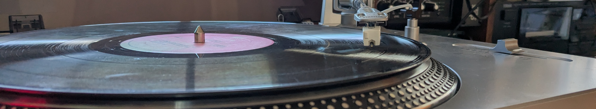
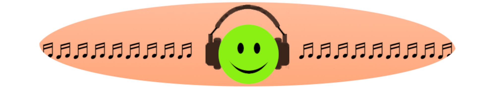

Streaming may be the greatest thing for listeners in recorded music history so far, but it's incomplete and not yours. Meanwhile you will probably only ever own a small fraction of your music. Algorithmic discovery is limited, and what music should play next is a delicate balance of memory selection and personal library access. You are going to have to figure out how you want your music, and adjust as you go based on the services and technologies available to you. Here's what you need, summarized from what I've figured out listening from the mid 1970s through now and streaming pretty much every day. How you meet these needs will change. What you need stays the same.
You are going to be adjusting how you meet these needs throughout your entire lifetime based on what resources you have available, your sense of self, and your connections to other people. It will be amazing. Let's check in on common recommended approaches based on where things are currently at.
Search and stream, or play your own copy. Consider getting your own copy if a recording might be ephemeral, or if you want to make it a permanent part of your life's musical journey.
Ephemeral recordings include recordings eclipsed by more recent or popular versions, and/or recordings with potential copyright processing issues. For example if you are referencing a fan-special recording off a band's website, you might want to look for a download option. That recording is copyrighted, and you are fine downloading it for your own listening, but a streaming service would require registration information needed for payment processing to make it available. Similar ephemerality can arise with some remixes, live sets, digitized rare media, recordings from other parts of the world you have been that are regionally restricted where you are now, and other situations. Anytime a recording (or you) could be a bit off the beaten path, consider if you might want to keep a copy yourself for future reference.
Buying an album, and/or physical media like vinyl, makes it a permanent part of your life's musical journey. Purchasing supports your chosen part of the greater music community more than a lifetime of streaming, marks a milestone in your musical life, and is rent free. Owning a recording reflects the highest level of regard you can have for it.

What you want to hear again, when you next want to listen to it. Personal libraries extend recognition into recall. Streaming will (usually) autoplay that song you liked again.
When you next want to listen to something depends on your listening phase, context, and desired frequency. Music goes through phases where it's new to you, in listening rotation, or occasional reference. Your context is what you are in the mood for and how you are listening right now. Frequency is how often music comes up in general rotation (some music has a wider orbit). With a physical media collection, you select manually. Digital listening adds continuous selection autoplay, which either lets you tune phase/context/frequency or it guesses. If automated bad guesses accumulate, you may eventually have to change services.
Which features and controls you have available depends on which app you are listening with. It is unlikely any single app will adequately support all the tracking you will want for life, and having more than one player in regular use helps preserve your listening history. Bookmarks on streaming services should be exported and kept safe. Downloaded music should be backed up. Do both a couple of times a year to vastly improve your chances of preserving your musical self. Without your listening data, lifetime music tracking is limited to what you can actively recall.

Humans and algorithms. Algorithms suggest what will most likely appeal to you based on what you've liked before. Humans might suggest something different.
Humans provide breadth. By way of extreme example, one of my most cherished and meaningful collection recordings was released a decade before I was born, and I might never have encountered it if a roommate hadn't told me (in no uncertain terms) that if I was going to be into music I needed to be familiar with some of the greatest in jazz. We then had numerous listening sessions for which I am forever grateful. People you trust will tell you what you need to hear, and your life will be better if you listen at least long enough to become generally familiar. Always monitor new releases whenever you have a good source, and check out curated introductions to genres or bands.
Algorithms provide depth, allowing you to dive deep into your current focal interest. Good discovery algorithms (including AI ones) are amazing resources that will take you as far as you want to go along the navigated path. You'll know it's time to move on when you start getting bored, that's the indicator you've reached the end of what that algorithm is going to reasonably provide.
Social discovery is noisy and awkward, but it can be entertaining and is a bit like panning for gold. Interact with those you bump into in your travels, it might pan out for you.
Communicate about music. Nobody has enough time in one lifetime to listen to even a small percentage of all recorded music. If you have listened to something several times over time, and you find it meaningful and good (or at least notably good), then other people will benefit from hearing about it from you.
Your perception and appreciation of any music means exactly as much as anyone else's. It doesn't matter who you are, or what song it is, it only matters if your music friends trust your listening enough and have time to check it out. How you share matters. By way of example
What you share matters, and if it's meaningful to you it's worth sharing. Even if the response is crickets, you still helped strengthen shared culture. If you share something someone already knows about and they like it, you can bond. If they already know about it and didn't previously like it, you've encouraged them to listen more broadly and appreciate more. If they didn't know about it, they will be thankful to have learned about something worth hearing.
Check in on where you are at now, and whether that's working for what you want and where you are going. Keep your reference history safe, it becomes more important over time.
Reference, Tracking, Discovery, Sharing. Know what you need. Live your best best music listening life.